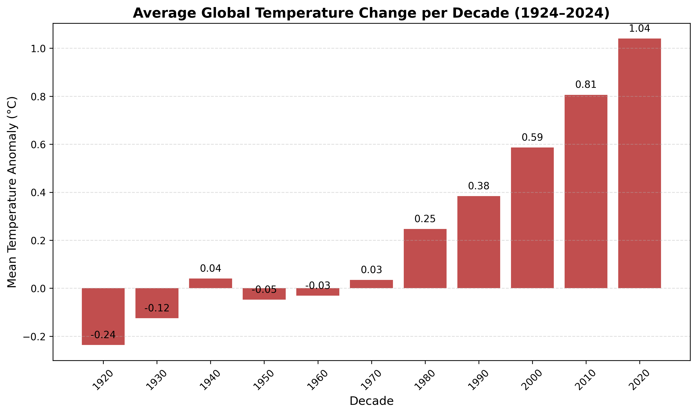
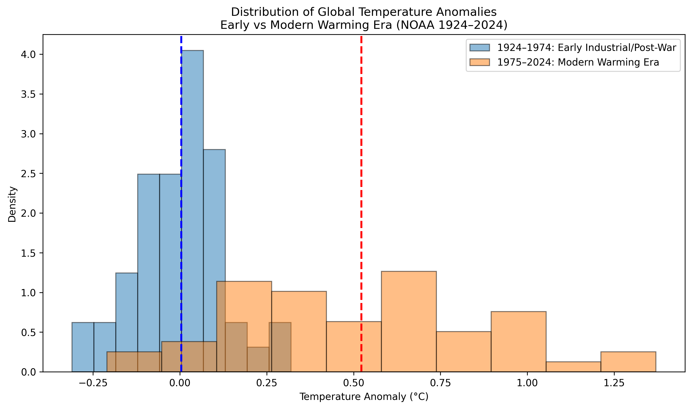
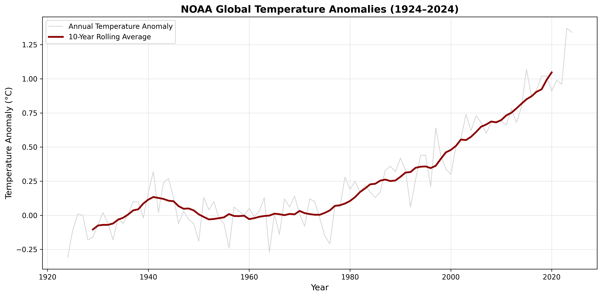

A Century of Climate Warming Through Data
Global mean surface temperature is one of the most widely used and trusted indicators of climate change. From 1924 to 2024, our planet has undergone dramatic shifts in climate conditions — reshaping ecosystems, weather patterns, and human livelihood. Studying this 100-year window allows us to observe the transition from early industrial conditions to the rapid warming driven by modern fossil fuel use, industrialization, and urban expansion.
Our goal is to transform abstract climate statistics into meaningful visual evidence. Through data visualizations, we trace how natural fluctuations evolved into persistent warming trends, and how historical developments align with measurable temperature changes across land and ocean surfaces.
To visualize and analyze global land and ocean surface temperature changes over the past century, highlighting long-term warming patterns and their connections to historical climate-influencing events.
For this project, we use the NASA GISTEMP v4 dataset published by the NASA Goddard Institute for Space Studies (GISS). This dataset provides monthly and annual global surface temperature anomalies from 1880 to the present. We focus on the most recent 100 years (1924–2024) to assess how Earth’s climate has shifted across the 20th and 21st centuries.
Each NASA record includes the year, global temperature anomaly relative to the 1951–1980 baseline, and separate land/ocean averages. To improve reliability, we also compare against NOAA’s Global Temperature (NOAAGlobalTemp) dataset, which uses a similar structure with slight methodological differences. Together, these datasets provide a robust and standardized view of long-term global temperature change.
This bar chart visualizes how the global average temperature anomaly has changed by decade using NASA’s land–ocean surface temperature index. Early decades—from the 1920s through the 1960s—show negative or near-zero anomalies, meaning global temperatures were cooler than the 1951–1980 climate baseline. Beginning in the 1970s, anomalies shift above zero, marking the onset of accelerated warming. After 1980, each decade becomes noticeably hotter than the one before it, rising from roughly +0.25°C in the 1980s to more than +1.0°C in the 2020s. This visualization reveals a steady and intensifying warming trend across the century.
This 3D surface visualization represents annual global temperature anomalies from 1924 to 2024. The X-axis marks each year, and the Z-axis shows the temperature anomaly relative to the 1951–1980 baseline. Extending these anomalies along the Y-axis creates a “warming wall” effect. The color scale transitions from blue (cooler-than-average years) to deep red (warmer-than-average years). Early decades are dominated by cool blues, while recent decades shift into intense reds — with the highest anomalies appearing after 2000. The 3D perspective makes the century-long warming trend visually striking and easy to interpret.
This visualization displays NOAA global temperature anomaly data over the past century. The light gray line represents year-to-year variability, showing natural fluctuations. The dark red line is a 10-year rolling average, which smooths out short-term noise to reveal long-term trends. The smoothed curve shows a clear acceleration in warming beginning in the late 20th century, corresponding to the rise in greenhouse gas emissions. This chart emphasizes that global warming is a persistent, long-term trend — not an isolated spike.
This distribution comparison divides the data into two 50-year periods using NOAA temperature anomaly data: 1924–1974 and 1975–2024. The earlier distribution (blue) clusters around cooler or negative anomalies, showing that the planet’s climate was historically cooler relative to the 1951–1980 baseline. The modern distribution (orange) shifts dramatically to the right, revealing consistently warmer anomalies and a significantly higher mean temperature. This shift demonstrates that global warming is not just about the hottest individual years — the entire climate system has moved into a new, warmer state.
